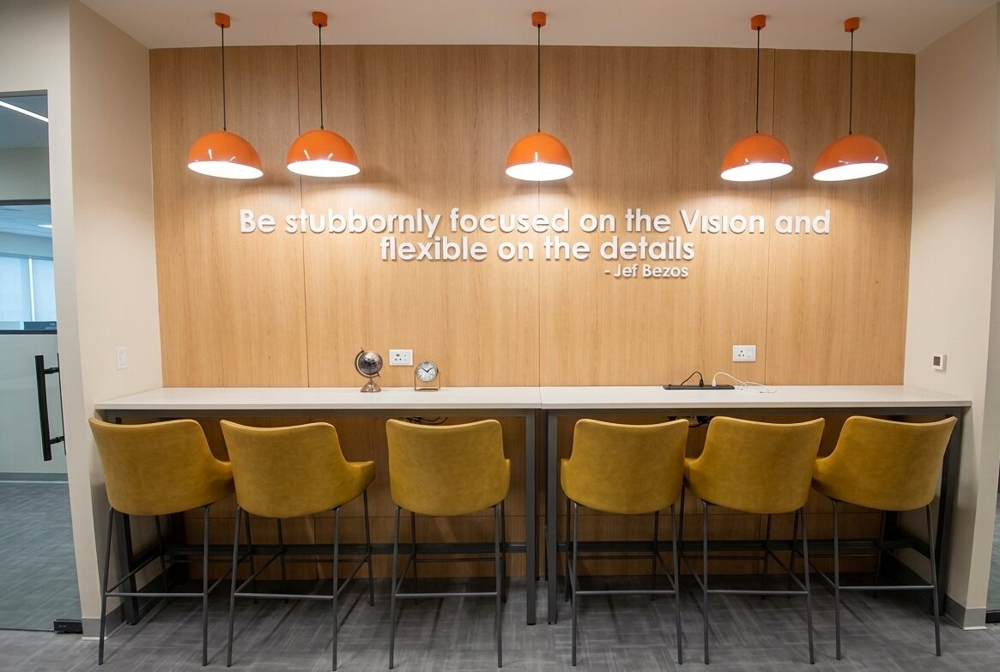

NCR-based · serving Gurgaon's corporate corridor
Office Interior Fit-Out Company Serving Gurgaon
G&T Solutions is a turnkey office interior and fit-out company headquartered in Noida, serving Gurgaon and the rest of Delhi NCR from one in-house team. The company has delivered 500+ projects and over 30 lakh sq ft across 30 cities in 3 countries, working under one contract from shop drawings to the final finishing detail — the same standard applied on every Gurgaon project.
Where we're based
NCR-based, not locally headquartered in Gurgaon.
G&T Solutions is headquartered at C 269, Sector 10, Noida — the company does not run a separate Gurgaon office. What it does run is a single team that already covers Delhi, Noida, Greater Noida, Ghaziabad and Faridabad, and takes on Gurgaon's corporate offices as part of that same NCR footprint. Drawings, sourcing and site supervision come from that one team, so a Gurgaon project gets the same standards, materials and point of contact as any other G&T Solutions site in the NCR.
What's included
One contract, every trade.
Every G&T Solutions fit-out covers the full scope of a commercial interior — designed, sourced and built by one in-house team instead of a stack of separate vendors.
Drawings & Design
Detail and shop drawings, finish selection and material sourcing — the working documents a site team actually builds from.
Civil & MEP
Civil work, electrical, low voltage/IT, plumbing and fire systems, coordinated as one build rather than separate contracts.
Interiors & Finishing
Woodwork, paint, ceilings and partitions, finished to the standard the client's brand is judged on.
Furniture
Custom and specified furniture, fabricated and installed by the same team that built the space around it.
Lighting & Signage
Lighting design and signage, planned alongside the interior rather than added on at the end.
Project Management
One point of contact from the first drawing to handover, across every location and every trade above.
Where we work
Gurgaon, and the rest of Delhi NCR.
G&T Solutions is headquartered at C 269, Sector 10, Noida, and covers the following NCR cities as a matter of course. In Gurgaon, that includes a 60,000 sq ft office fit-out for Indiabulls. Beyond the NCR, the team has delivered projects in 30 cities across 3 countries — including 5,00,000 sq ft for TCS, 2,00,000 sq ft in Lucknow and 50,000 sq ft in Coimbatore.
Featured Gurgaon project
A 60,000 sq ft office for Indiabulls, in Gurgaon.
Among the projects G&T Solutions has delivered in Gurgaon is a 60,000 sq ft office fit-out for Indiabulls. Like every G&T Solutions project, it was run by the same Noida-based team — one contract, one point of contact, from shop drawings to the final finishing detail — rather than a separate local contractor.
Recent work
A look at G&T Solutions' fit-outs.
A sample from the 500+ projects delivered across the NCR and beyond — the full portfolio is on the homepage.



Questions
Office fit-outs in Gurgaon — answered.
Is G&T Solutions based in Gurgaon?
No. G&T Solutions is headquartered in Noida, at C 269, Sector 10, and serves Gurgaon as part of its Delhi NCR coverage. The company does not have a separate local office in Gurgaon — one Noida-based team runs drawings, sourcing and site execution for Gurgaon projects.
Does G&T Solutions take on office fit-out projects in Gurgaon?
Yes. Gurgaon is one of the NCR locations G&T Solutions actively serves, alongside Delhi, Noida, Greater Noida, Ghaziabad and Faridabad. Local work includes a 60,000 sq ft office fit-out for Indiabulls. Site visits, drawings and execution are handled directly by the company's own team rather than a local subcontractor.
Does working from a Noida base affect project quality or turnaround in Gurgaon?
No — the same in-house team, drawing standards and vendor network used on every G&T Solutions project are applied to Gurgaon sites. The company already runs projects across 30 cities in 3 countries from its Noida base, so distance within NCR does not change how a project is planned or supervised.
What's included in a G&T Solutions office fit-out?
Detail and shop drawings, finish selection, material sourcing, civil work, electrical, low voltage/IT, plumbing, fire systems, woodwork, furniture, paint, ceilings and partitions, lighting and signage — all delivered by one team under a single contract, from drawings to the final finishing detail.
How experienced is G&T Solutions?
G&T Solutions was founded by Aman Garg, who has 10 years of individual experience in the fit-out industry. The wider team brings 20+ years of combined experience, and the company has delivered 500+ projects and over 30 lakh sq ft (3 million sq ft) of built space.
Which companies has G&T Solutions worked with?
Clients include TCS, Dabur, Hero Group, OYO, Levi's, Adani Infra, Jubilant FoodWorks, Shapoorji Pallonji, Grant Thornton, Indian Railway and Indian Navy, among others.
How do I get a quote for an office fit-out in Gurgaon?
Call +91 120 4322277, email aman@gntsworks.com, or use the enquiry form on the G&T Solutions homepage, and mention that the project is in Gurgaon so the right team can follow up.
Planning an office fit-out in Gurgaon?
Tell G&T Solutions about the space and the timeline — one contract, drawings to final finish.
Or email aman@gntsworks.com